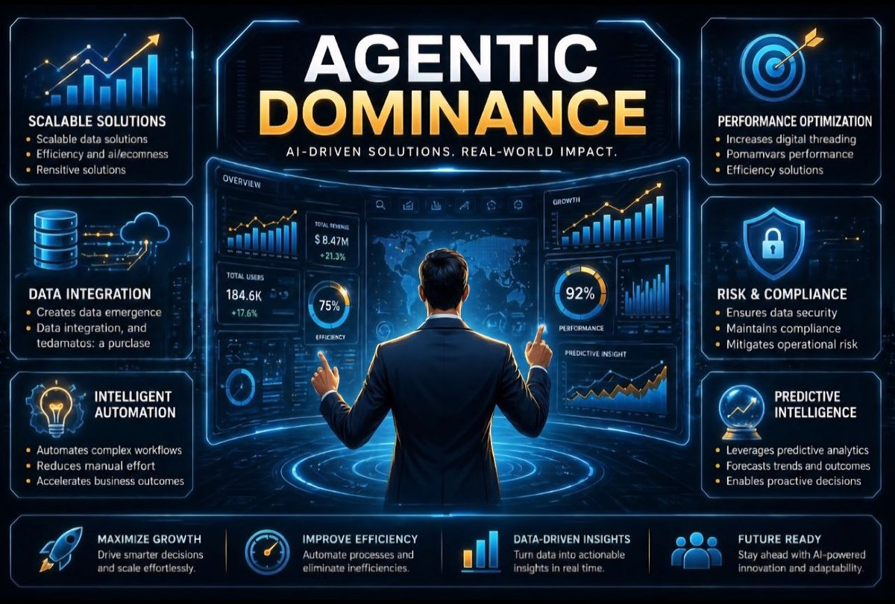

Native Project Build
Creation DFY
Done-For-You AI Setup + Digital Service Funnel
A refined service-business funnel built to sell done-for-you digital creation and AI implementation with stronger offer framing, cleaner visuals, and referral-aware paths.



Readable social-post format
Built from real project media
Exported as PNG and PDF
01
Service Positioning
Premium done-for-you offer aimed at buyers who want execution, not just theory.
02
Conversion Paths
Main sales page, apply flow, affiliate route, thank-you page, and closer support.
03
Brand Look
A warm, grounded visual system that feels more like a serious service business than a hype page.
04
Next Move
Improve attribution, domain certainty, proof sections, and backend handoff/CRM clarity.
What this asset is for
A deeper one-page social and promo overview built from the project’s own visuals and offer language instead of a generic placeholder style.
Best use cases
- social teaser post
- client or partner snapshot
- offer deck support
- internal overview asset
Content basis
Drawn from current project pages, repo visuals, and the strongest positioning already present in each build.